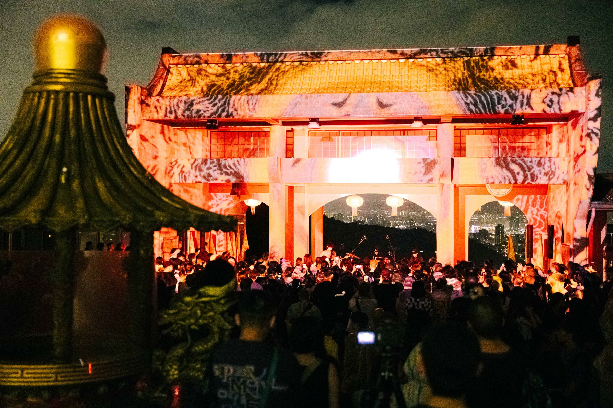
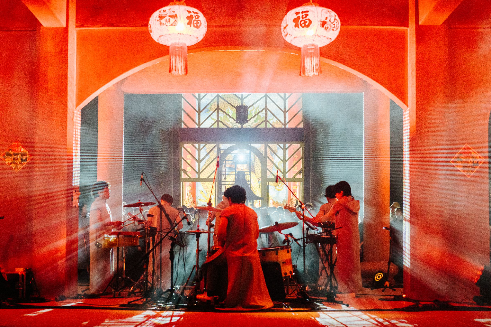
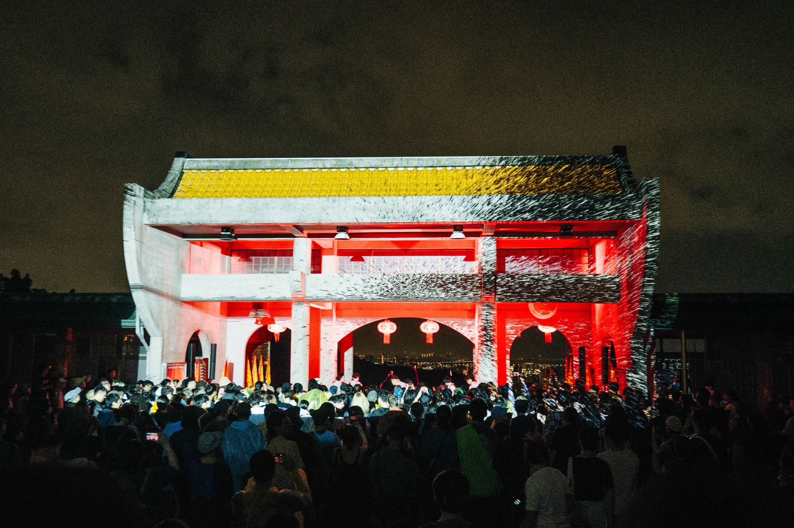
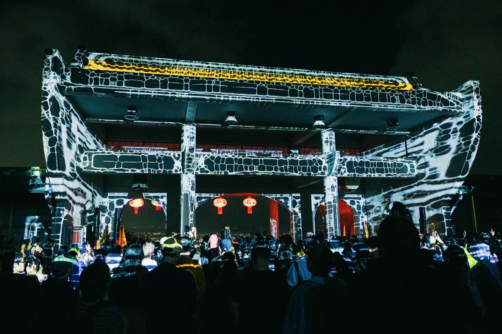
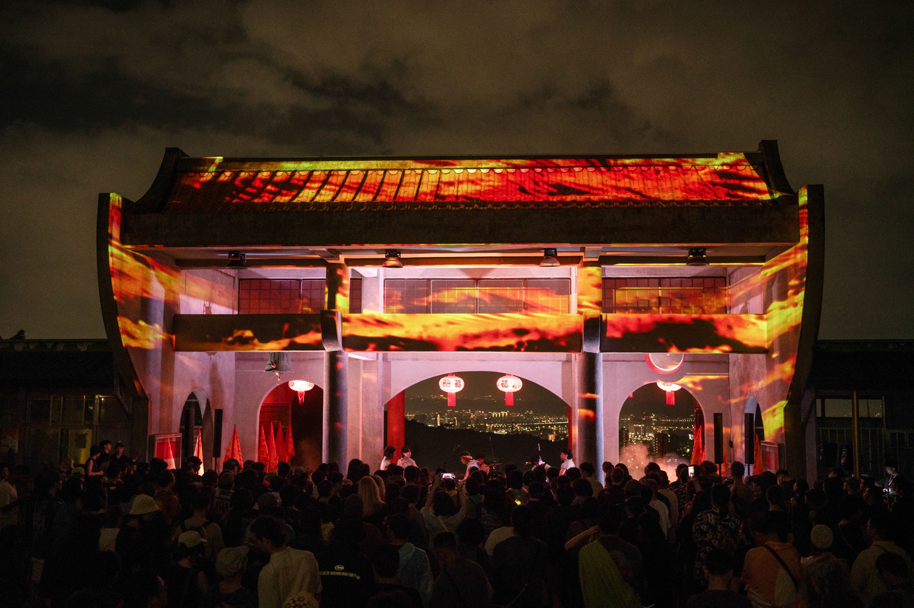
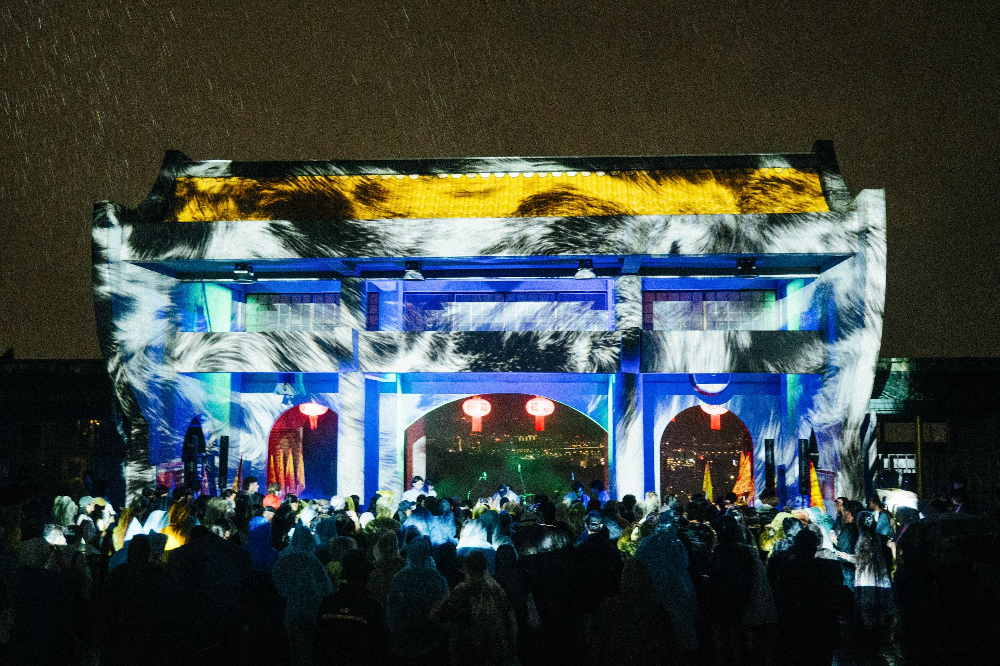

MONG TONG - Live
Real-time Generative Visual
2024
Date:
SEP. 28 2024: Taipei Koxinga Temple, Taipei

After a world tour spanning three years, four continents, over ten countries, and 30 cities, Mong Tong returns to Taiwan in search of a unique, local venue. As one of the islands with the highest mountain density in the world, Taiwan's distinctive "high-altitude temples" are a rare sight globally. This event will be held at the "Taipei Koxinga Temple," featuring our touring partner from Thailand, JPBS, and visual artist Huang Wei, who will be showcasing a light projection.
歷經3年四大洲、超過10個國家與30個城市世界巡演後，Mong Tong 回到台灣找尋獨一無二，屬於本土的場地。身為全球高山密度最高的島嶼之一，台灣獨特的「高海拔宮廟」更是世界少見的景象。本次專場來到「開臺聖王成功廟」舉辦，並邀請我們泰國巡演夥伴之一JPBS，與視覺藝術家黃偉的光雕投影。





Credits:
Organizers: 子皿有限公司、靡靡之音國際有限公司
Hardware & Equipment: 角局音響有限公司、偉緻視訊
Film Production: 日辰影像工作室
Venue Support: 開台聖王成功廟
Lighting Designer: 小小
Sound Engineer: 永瀚
Wardrobe: Road Sign
Guest Performer: JPBS
Real-time Generative Visual: HUANG WEI
Special Thanks (Drummer): 小白